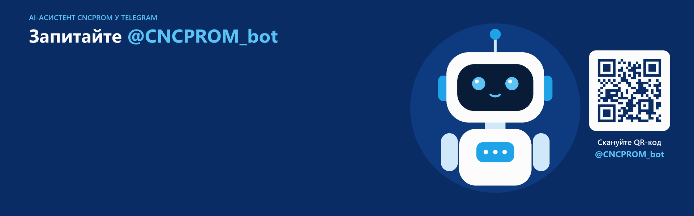
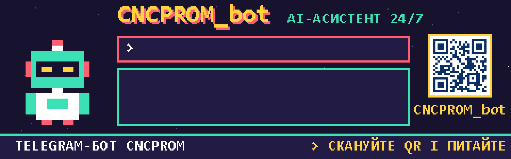

Анімовані банери @CNCPROM_bot
Два GIF-банери 1920×600. Клік по банеру відкриває бота в Telegram.
1. Діалог із роботом

<a href="https://t.me/CNCPROM_bot" target="_blank" rel="noopener">
<img src="cncprom_bot_banner.gif" width="1920" height="600"
style="max-width:100%;height:auto" alt="AI-асистент CNCPROM_bot у Telegram">
</a>
2. 8-біт: ретро-гра

<a href="https://t.me/CNCPROM_bot" target="_blank" rel="noopener">
<img src="cncprom_bot_8bit.gif" width="1920" height="600"
style="max-width:100%;height:auto;image-rendering:pixelated" alt="AI-асистент CNCPROM_bot у Telegram">
</a>